Teacher Growth- Instructional Strategies
Introduction
Through a variety of strategies, students are able to grasp the daily math lessons. The strategies used in math are specifically targeted to enrich, differentiate and build meaningful connections in learning. To do this, I have used whiteboards, manipulatives, technology and interdisciplinary strategies. All of the strategies used are ways that elevate engagement in the lesson and help me monitor student progress at the same time.
Whiteboards
I have found from the past year teaching that if I stand in front of the classroom and talk the students stop listening to me. Students need to have something to do while they are learning new skills. I have also realized that I need to monitor student progress throughout the whole lesson. Therefore, the whiteboards hold the multipurpose of engaging the students and allowing me to check their understanding of the key concepts. Whiteboards are used both in whole group instruction as well as in small group instruction.
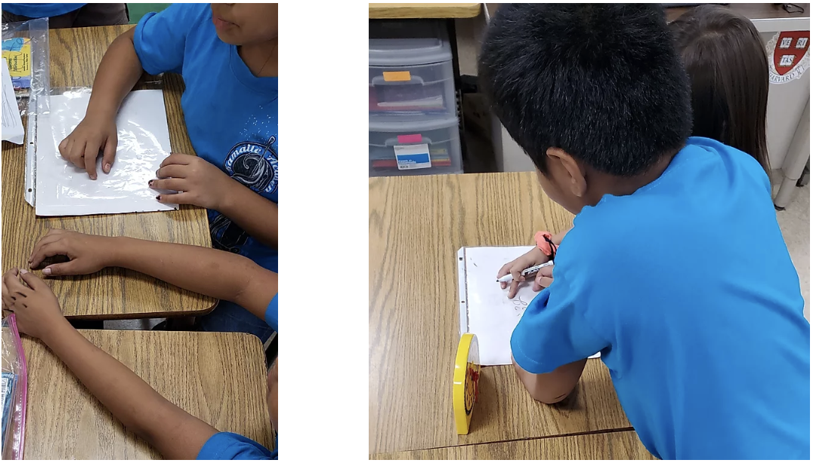
Two examples of students working on the whiteboard question before I ask them to show me their work.
For example, I will give students a problem to answer on their whiteboards when I just taught them how to make an array. I say, "Class, we just learned how to make an array. I want you to show me an array that shows three rows of 4. Go." Then the students draw the array on their whiteboards. When they have their answer, they show me the red part of their whiteboard. In this way, I know that they are ready to show me their work, and they do not have to disrupt other students' working time. When I see most of the class showing me red, I tell them to show me their work. I scan the classroom and make a mental note of the students who did not get the question correctly. If a student showed an array with four rows of 3, I know that they need more work on what rows and columns look like. If a student just drew three rows, I know that they need more practice understanding what an array is. I use this information to decide who I will pull for small groups.
When I have decided who to pull into small groups, such as the student who wrote four rows of 3 or the student who drew only three rows, I call them over to my table during individual work time. These students do not work on the practice set problem by themselves. Instead, I give them more scaffolded practice on their whiteboards to help practice the skill of drawing an array. For example, I mentioned I noticed that by going step by step over what a row and a column look like, a student was able to answer the question of drawing an array of 3 rows of 4 by the end of the small group instruction. I give the same problem or a similar problem to see if the student understood the skill. For the student who wrote just three rows, I go over rows and columns as with the other student, but I also add that when I specify three rows of 4, I mean asking for three rows and four columns.

Students are showing their work on the white boards.
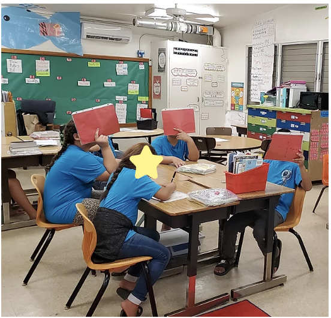
Students are showing "red" because they are waiting for me to tell them to show their work.
The strategy of using whiteboards has allowed me to target differentiated small group instruction according to who can answer the questions correctly. I noticed that there are students that are almost always able to answer the whiteboard questions correctly. Those students will be working immediately on the practice set worksheet when we move into individual or small group instruction. The students who struggle more on the whiteboards are the students that I know need additional support with me in a small group. For instance, the artifacts below show a list of problems the students had to solve. One of the students was struggling on the last two problems as you can see on the right picture. Therefore this student needs more practice subtracting when there is a zero digit in the middle of a three digit number. I know this is what the student needs to work on because according to the problems on the board the last two problems both have the same number that has three digits (908) and it has to be subtracted by another smaller number. After giving this student more exercises on the whiteboard with a zero digit in the middle of a three digit number, this student was able to perform better on the last problem I gave her.

Artifact shows the class whiteboard with subtraction problems the students have to complete on their individual whiteboards.
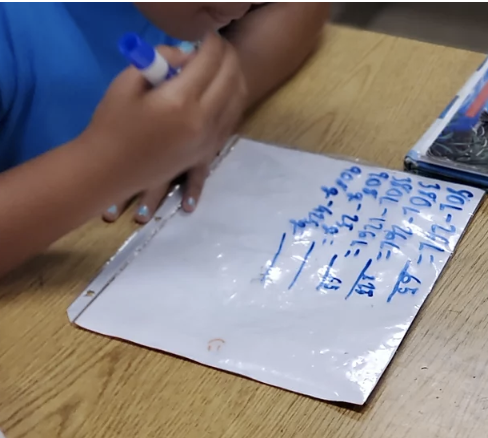
Artifact shows a student struggling on the last two problems.
Manipulatives
To be able to differentiate instruction for students fully, I need to provide them with the support they need to be able to take the skills learned and transition from concrete to pictorial to abstract ideas. This means working with them in smaller groups so that I can give them more individualized attention and support. For example, one lesson I asked students to look at a teacher analog clock, and I had them write on their whiteboard the time they saw on the analog whiteboard. The student in the picture below did not get the right answer. After giving the class two more problems related to telling time I realized that this student needed additional support because she was not getting the answers correct. Therefore I had her work in a small group using student clocks. She had to write the time I had on the teacher clock on her watch, and she had to look at the different hands of the clock and touch them herself to tell the time. By the end of the small group instruction lesson, she was able to tell the time by herself. She passed her exit ticket with a score of 2 (the maximum rating on the exit tickets).
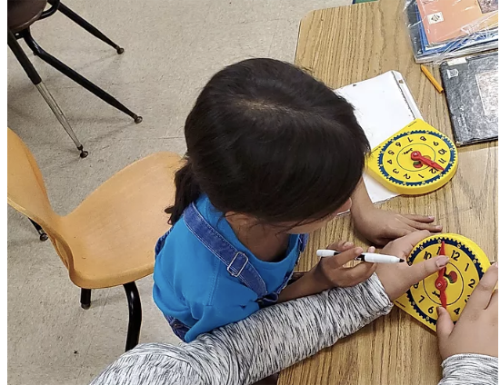
Example of student who was not able to answer the whiteboard questions at first but once she got to work with a manipulative she grasped how to tell time on the analog clock.

Example of a small group of students who need additional support. Therefore, they use manipulatives to tell time.
Another example of how students deepen their undestaning in small group instruction is when I notice that a group of students is struggling with the problem set question assigned to them. Therefore I bring in items to create concrete examples of their problem question. For the artifact underneath, I noticed that the students were having a challenging time understanding how a cup of almonds and baby food could be equal to 700g, and just the baby food be equivalent to 374g. So what I did was I brought a scale to their table and chose items than I told the students to imagine that the sand clock (the yellow thing I am holding) was the baby food and that the almonds were the green bottle. Then I went through the motion of putting both items on the scale and only putting the sand clock on the scale. This showed the students that what they needed to do to find the weight of the green bottle/almonds was to take away the sand clock/ baby food from the scale. They were able to figure out what they needed to subtract to solve this problem using the manipulatives. This example is something that happened spontaneously. Still, it is something that I use when I notice that students need concrete examples before being able to move to pictorial or abstract patterns on their word problems.
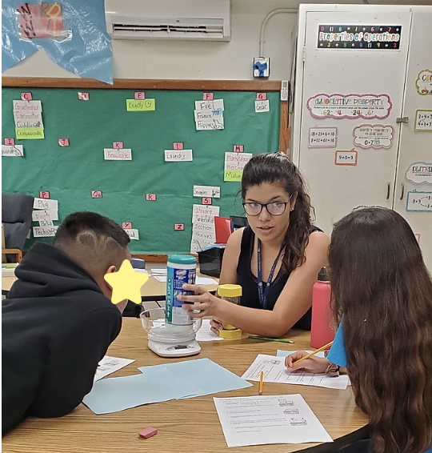
The artifact on the right shows a group of students sitting with me at the round table working through a word problem using a scale, a sand clock and a green bottle.

The artifact on the right shows a group of students sitting with me at the round table working through a word problem that they needed extra support in whole group instruction.
Interdisciplinary Strategies
Interdisciplinary strategies are strategies that I use in the classroom at least a few times per module so that the students can have small projects that help them to understand "why" the skills they are learning are relevant to them. I also use interdisciplinary strategies as a way to engage students. Last year, I spent most of the time lecturing in front of the classroom. I noticed that students' attention wanes after about 8 to 10 minutes. Therefore, few students were retaining the information I was giving them. This year, I decided that I would try to incorporate more arts integration strategies into the classroom and different mediums of learning to help engage students.
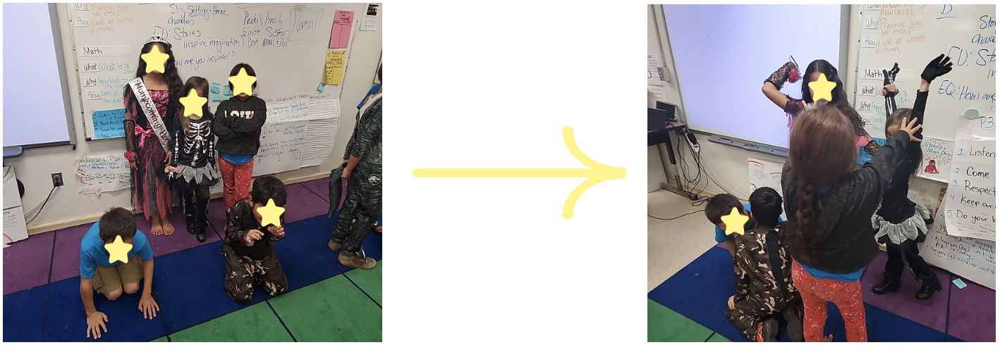
The artifact above shows a group of students acting out the main idea of a text read in class. The text said that Prudy (the main character in the story) was part of a normal family. The students are showing a family picture.
The artifact above shows a group of students acting out the main idea of a text read in class. The text continues by saying that there was something not normal about Prudy's (the main character) family. The students are predicting what was wrong with her family in this artifact.
To push students to have a deeper understanding of the stories read in class I create drama activities. For instance, in the story “Prudy’s Problem” the students began the lesson by reading the story and reflecting about what they thought was the main idea of the text. From this reflection I noticed that the student with the skeleton costume in the pictures did not have much to say about the main idea because she was having trouble comprehending the text. Afterwards the students had to get into groups and decide what the main idea was for the first paragraph. In the left artifact you can see how the students saw Prudy’s normal family picture as consisting of parents, children, and dogs. On the second artifact you can see how the students thought that the part that was not normal about Prudy’s family was that in secret they fight a lot. From the artifacts I could see that the students with the skeleton costume was able to grasp the main idea of the text. This had to do with her working in a group and having her team members also explain the main idea to her. Therefore she had several instances where she could go over the text and be prepared to show the drama picture to the class. In other words, her understanding of the text deepened through the drama activity.
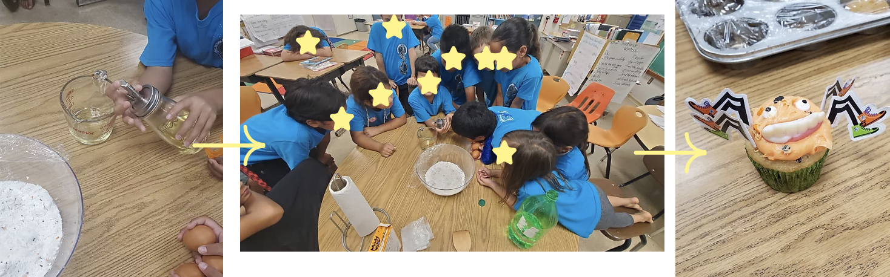
The artifact above shows a student measuring the milliliters of oil we will need for the cupcakes.
The artifact above shows the class working together to measure the ingredients necessary to bake the cake. Everyone is engaged as can be seen by their bodies positioned towards the measuring materials.
The artifact above shows an example of the cupcake done and decorated by a student from the class measuring project.
The artifacts above show another example of how I integrated interdisciplinary strategies in math. One of the modules in the Eureka math program is dedicated specifically on measurement. At the start of the module I told the students "why" it was important for them to know different measurements. However I felt that they did not understand "why" it was important because when I asked them a few days later only two students raised their hands to tell me. Hence, I realized I needed to show the students specifically a way that measurements could help them and their families in their daily lives. To do this, I began the lesson by asking again who knew why we need to learn about measurements. At the start of the lesson, four students were able to raise their hands and give a reasonable explanation as to the importance of measurements. For instance, one student told me that they would use measurement to figure out how much water they should drink in a day.
I told them that another reason it was important to understand measurement was because it could help you to bake a cake. I asked for volunteers and the whole class watched as we measured ingredients using the measurements we had learned for the past few weeks such as milliliters and grams. The students mixed the ingredients and everyone watched carefully. The whole class was very focused throughout the whole lesson, which showed me how much they appreciated doing an interactive lesson that not only taught them math skills but also life skills like how to measure the oil for a cupcake recipe.
I took the mixture home and baked cupcakes. The next day, I brought the cupcakes and the students worked on measuring the ingredients for the frosting and decorating their cupcakes for Halloween. At the end of the second lesson, I asked the class again the importance of measuring. Every student in the class raised their hand to answer, which shows the value this interdisciplinary strategy has on the students making connections to their lives and applying the math standards.
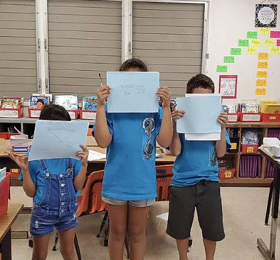
The artifact to the left shows students presenting their findings on a math question to the class.

The artifact on the right shows students getting their posters reading to present. This gives students a voice and allows them to teach each other and explain a skill in a different way.
Another way that I integrate interdisciplinary strategies into the classroom is by giving students a platform to voice out how they see the skills taught in class. The students go into groups and work together to answer a word problem. Then they stand in front of the class and teach the rest of the class how they solved the problem. Hence, the students can give each other a different way of explaining the skill taught. For instance, one lesson I taught about using a tape diagram to find how many groups and number is in each group according to the word problem. The problem set had four word problems. I know from last year doing this lesson that the students do not like to do word problems because when I just gave them the problem set last year most students only got through one problem in the allotted time given. Instead of having each student attempt to answer each word problem again this year, I decided to divide the class into four groups and have them work on the problem as a team. In this way, I am teaching the students how to work together, how to share the chart paper given to them to show their work and how to practice their presentation skills when speaking to the class. The students have to work on delegating tasks to each other to present their work. At the same time, they are practicing the skill of tape diagrams and word problems.
References:
All of the artifacts on this page are taken from the Great Minds Eureka website: Great Minds Eureka. (2019). Eureka Math.
Technology
The last strategy I will be mentioning is technology. Technology is a way to engage students by using another medium of learning while also tracking their progress. Students at Kamaile Academy use IXL, a student learning computer program that has a setting that follows the Eureka math standards according to the module that I am teaching. Therefore I can assign specific rules or lessons, and students can enrich their learning by practicing online. The students have been using IXl since second grade. Therefore I have no diagnostic data from before they used IXL.

Artifacts on the right and left shows students signing into IXl
Every student has their username and password that lets them log in to IXL and see their progress throughout the year. As a teacher, I also have the option of viewing each students' progress and the whole class progress.
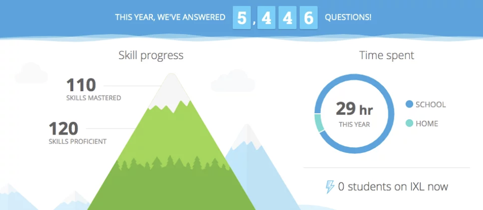
The artifact on the left shows the classroom progress throughout the year. It shows how many skills have been mastered and how many skills are proficient. The goal is to increase the number of skills learned.
The goal for each student is to be able to finish each standard with a mastered score. Each student gets an award after a different number of questions depending on the skill. Therefore this motivates the students to want to keep working on their skills. When a student is done with the problem set worksheet, I tell them to get the computer and work on IXL. In this way, they get to practice the skills they just learned in an online platform, and they can also use their time wisely while the rest of the class continues working on the practice set.
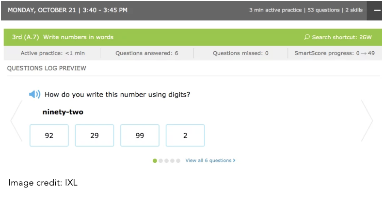
The following artifact shows an example standard that was practice for a student and the number of questions the student got correct and how long the student worked on that question.
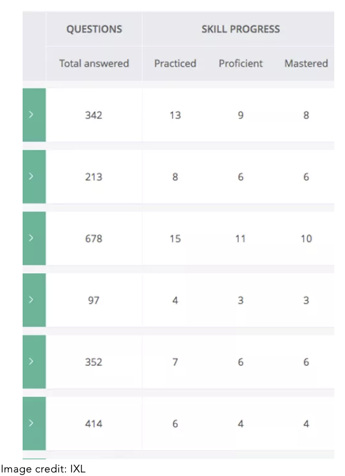
The following artifact shows an example standard that was practice for a student and the number of questions the student got correct and how long the student worked on that question.
The other computer program that I use in the classroom to deepen understanding of reading is called Lexia. This program individualizes students’ work so that they are working on reading skills that pertain to their own reading level. A student who needs more support on -ing endings would not be working on the same activity as a student who needs to compound words. Through this program the students can track their own progress and I often catch them stating that they are “three activities away from ending the program” or “I just passed my level. Now I am closer to getting better at reading”. This program is very interactive because it includes several word games the students can play. Every level has a theme such as the ocean, the desert, the rainforest, Hawaii, China, etc. Therefore the students learn facts about different places in the world when they move up on their levels. This motivates students to want to move up a level.
Through the artifacts below I also am able to check where students are in their progress for improving their reading skills. I can also see how the class is doing overrall. By looking at this data I can make changes in the students' learning so that they can overcome the challenges to pass to the next level.

The following artifact shows an the data for several students on Lexia. The data shows at what grade level the students are working on. Level 18 is the highest level. The table also shows the total minutes students have spent on Lexia through out the week.

The following artifact shows the progress the whole class has made from the beginning of the year until today. According to this graph, 4 students started the year above grade level material (dark blue) and currently there are 6 students at this level. 3 students started at grade level material (light blue) and 3 students are still at this level. 15 students started below grade level materia and now there are 13 students at this level.
I can also see if the student is struggling in their level and if they need additional individual support. For example, one student in the class is struggling with multi-syllable words. This student is below grade level and is at high risk according to the website of not catching up to third grade level by the end of the year. This means that this student needs additional support. To do this I would pull her aside and give her several lessons on multi-syllable words and practice exercises that she would complete with my support such as the artifacts shown below. Afterwards, she would go back to working on the computer to move up on her level.
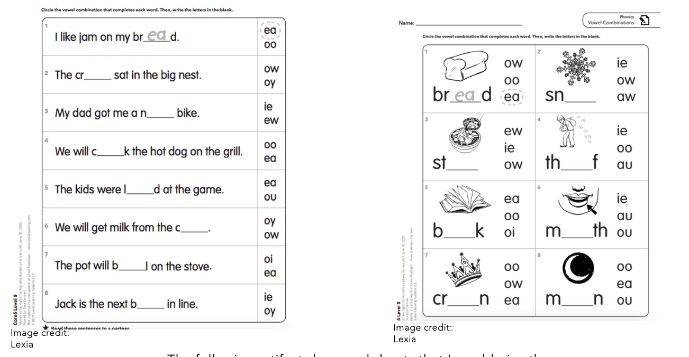
The following artifact show worksheets that I would give the student who needed extra practice on multi-syllable words so that she could improve on her Lexia level.
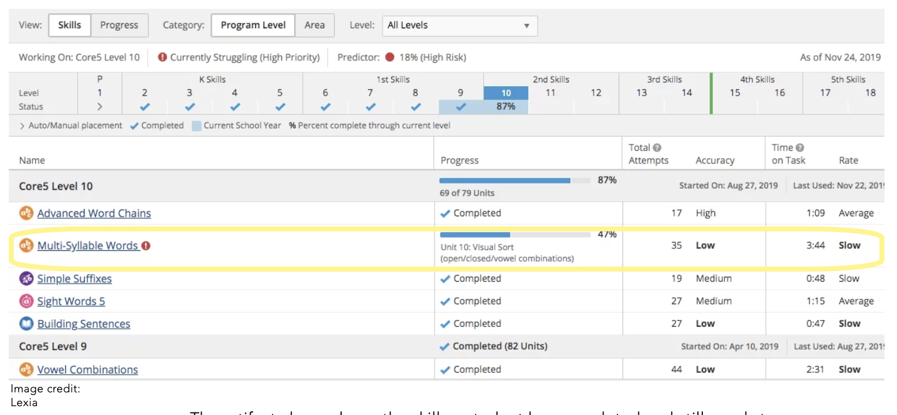
The artifact above shows the skills a student has completed and still needs to complete to move unto the next level. This student needs support on multi-syllable words to be able to pass unto the next level as can be seen from the row that is not completed yet.
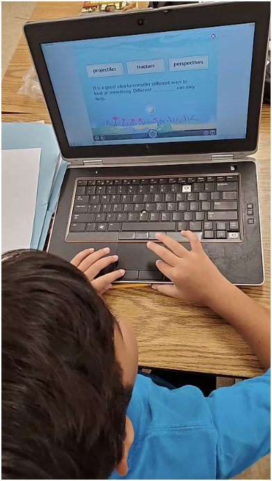
Artifact on the left shows an engaged student working on the Lexia program. The student is working to identify which word works correctly in the sentence.
All of the artifacts on IXL on this page are taken from the IXL website: IXL Learning. (2019). IXL Analytics.
All of the artifacts on Lexia on this page are taken from the Lexia website: Lexia Core 5. (2019). Rosetta Stone Company.
Conclusion
As a result of whiteboards, technology, manipulatives, and interdisciplinary strategies, I can support students on an individual level. I use different approaches to build the mathematical skills each student needs to reach the standards. Through the use of these different strategies, I also have curved behaviors in the classroom and seen a change in student engagement. This year, I have seen students more motivated during math, and it is due to the different strategies used to target the skills they need to practice.
Reference:
CCSSO’s Interstate Teacher Assessment and Support Consortium (InTASC). (2011, April). PDF. Washington.